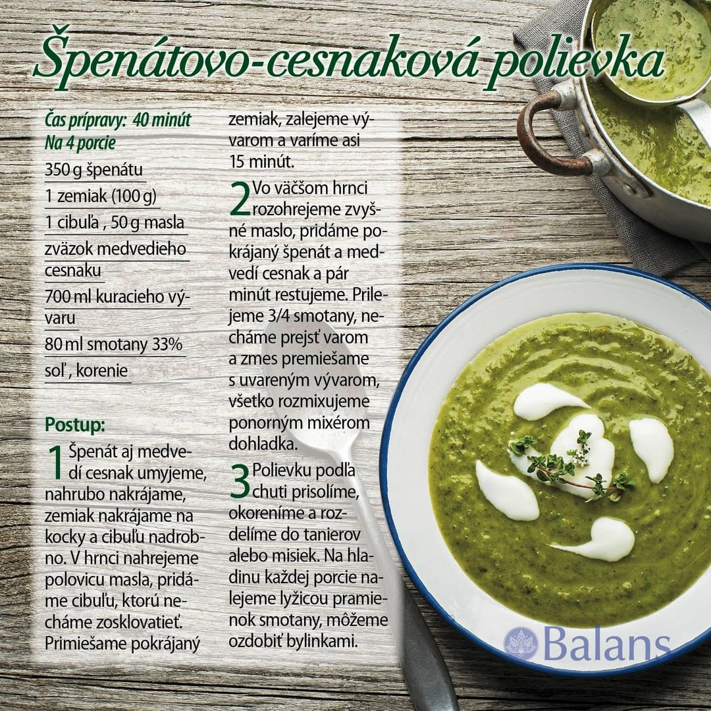

Špenátová polievka podľa @balanscasopis — Normy Jedál
Už vo vašom okolí vyrástol medvedí cesnak? Jeho sezóna trvá iba krátko, pochutnajte si na ňom napríklad aj vo forme skvelej špenátovo-cesnakovej polievky. Viac receptov z medvedieho cesnaku nájdete v marcovom Balanse, ktorý je práve v predaji.
#balanscasopis #motivacia #medvedicesnak #beargarlic #polievka #spenatovapolievka #soup #zdravyrecept #vegetarianskyrecept #dnesvarim #zdravevarenie #balans #inspiracienakazdyden #motivation #balanceyourbodyandsoul #balance